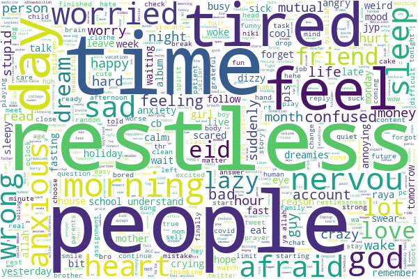

“Yesterday, I felt like I was stressing out to death; my life felt so rigid, just going in circles over and over.”
“I feel like I'm poisoned, and every night I'm scared I'll forget something.”
“This is giving me a headache, like I'm actually hurt or something.”
“I feel so sad, like my heart is breaking, but I can't even figure out why!”
“Oh, my Gosh!”
These words seemed to be absurd, but they were actually cited from the chat history of a real anxiety disorder patient, which may be the most credible evidence of his or her inner voice.
Anxiety, or even more severe, mental health problems, are becoming increasingly close to every human being. The civilization has constructed tremendous skyscrapers, magnificent buildings, but----
Beneath the Tower, shadows linger, where light has yet to reach
A study published in the most influential journal in the medical field, The Lancet, shows1 that, with the development of the economy, the rate of mental disorders has increased dramatically in the 21st century. The lifetime risk of developing a mental disorder in China is estimated to be 13.2%, According to this rate, the number of patients in China who suffer from mental problems has already reached 100 million. At the same time, a research2 by American Medical Association says that, the mortality rate of people who has mental problems is considerably higher than that of normal people, with a potential life-loss of up to 10 years. While 14.3% of the deaths in the world can be blamed on mental disorders, which means that over 8 millions of people dead because of mental diseases.
Mental diseases are just like a evil from a world that we cannot understand, the more we try to free ourselves from the material restrictions, the more we are addicted to consume everything, the more he are prepared to swallow every thing we love, like equivalence exchange our fate as sacrifice is predestined. He said,
Hitherto shalt thou come, but no further.
So, are mental diseases really so mysterious? Or can we only see some mysteries in the data?
This heat map shows the global rate of mental disorders. It is easy to see that the rate of mental disorders is strongly related to the development of the economy, and the more advanced the country is, the deeper the red which represents mental disorders. Europe, the US, Brazil, Arabic countries, Australia, these very countries we usually associate with developed economy are now the pronouns of higher mental disorder risk . And through the following scatter plot, this correlation is more visually apparent, with the rate of mental disorders rapidly boosting as GDP increases.
If the relationship between GDP and the incidence of anxiety disorders is not so evident, then the relationship between gender and the incidence of anxiety disorders seems even more mysterious and thought-provoking.
In the figure below, the dots representing the incidence of anxiety disorders in women are noticeably higher than the gray-black dots representing the incidence in men. As representative countries of the Eastern and Western worlds, both in China and the United States, the incidence of anxiety disorders in women seems to be over twice than that of men.
A research project conducted by Peking University Sixth Hospital and 44 other institutions, which took more than three years to complete, also showed that the incidence of depression in women is significantly higher than in men. In response to this, a study3 published in the journal Frontiers in Neurology pointed out that, from a general biological perspective, differences in gene expression patterns, neuroanatomical structures, neural plasticity, and immune characteristics between men and women all contribute to women's higher susceptibility to mental illnesses, especially severe psychiatric disorders. Additionally, the unique psychological cycles women experience during the perinatal period are also important factors.
Apart from GDP and gender, age is also an important factor influencing the incidence of mental illness. The figure below shows the incidence of anxiety disorders across different age groups in both China and the United States.
It can be seen that different countries have varying age groups with a higher incidence of anxiety disorders. In China, the prevalence of anxiety is more common during adolescence and shows a resurgence after the age of 30. In contrast, the incidence of anxiety disorders in the United States exhibits a trend of increasing and then decreasing with age, peaking around 40 years old. These inter-country and age-related differences are often difficult to explain biologically or medically, and scholars believe they may be related to cultural differences.
Those drowned stars who have imparted unto me
Do you remember the chat records of the anxiety patient mentioned at the beginning? What if I told you that what you see is only a portion of over 3,000 chat records? What if I said that these over 3,000 chat records are merely a small part of the conversations of a few mental health patients? It is hard to imagine the suffocating torment that individuals with mental illnesses endure; their lives should shine as brightly as the stars in the sky.

This is a word cloud created from their chat records, and what stands out are words like 'insomnia', 'tired', 'anxiety', 'fear', 'time' and 'people'. Behind these scattered words lies the genuine fears and struggles experienced by each patient.
Perhaps some have noticed that these terms hide a common underlying theme -- stress, which seems to be the key to understanding everything. Why are people in more economically developed areas more anxious? Why do women have a higher incidence of mental illness than men? Why are the mental states of adolescents and middle-aged individuals more fragile than those of other age groups? Ultimately, it comes down to the unique pressures faced by these groups. The pressures of work, life, family, academic demands, and the burden of caring for both the elderly and young children, as well as the pressures stemming from culture and society as a whole—they are not lacking in strength; they are simply bearing too much.
We found a dataset that documents the self-reported causes of mental disorders and mental illnesses from 95 patients diagnosed in professional medical institutions. Perhaps from this data, we can more intuitively see what kind of suffering these individuals are enduring. From the pie chart below, it is evident that most psychological and mental problems arise from various social relationships, family issues, and economic factors. Of course, we also see some less common causes, such as self-esteem, puberty, health status, and so on.
So, don't be too afraid of tomorrow.
In May 2013, the 66th World Health Assembly adopted the World Health Organization's Comprehensive Mental Health Action Plan 2013-2020, which emphasizes the need to provide comprehensive and integrated mental health and social care services within community settings. This is regarded as an important global initiative to reduce mental illnesses and includes a series of measures.
Fortunately, many countries have actively responded to this call. On April 27, 2022, the General Office of the State Council of China issued the '14th Five-Year Plan for National Health,' which clearly stated the need for comprehensive interventions on health issues and influencing factors, as well as the improvement of mental health and psychiatric services. The plan also set development goals for mental health—by 2025, the rising trend of psychological-related diseases will be slowed, and severe mental disorders will be effectively controlled.
The National Health Service (NHS) in the UK has published documents such as the 'Long-Term Plan' and the 'Five-Year Forward View for Mental Health,' and has specifically established mental health service platforms and helplines.
The U.S. Department of Health and Human Services released the 'National Mental Health Plan for 2017-2022.' This document outlines the priorities and goals for mental health services, prevention, treatment, and research in the United States. At the same time, the National Institute of Mental Health (NIMH) has also published several strategic plans regarding mental health research.
From the figures above, we can also gain a glimpse into the current implementation status of mental health and psychological support measures in various countries.
With continuous development worldwide, the emphasis on mental illnesses will only grow stronger. As psychological issues increasingly become recognized problems, the fear and stigma surrounding these mysterious diseases will gradually diminish; With our preventive and protective measures , more and more falling stars will be lifted up together by us.
We also have reason to believe that the patient with anxiety and depression mentioned at the beginning will in the near future, gain access to truly convenient and widespread medical services and embrace a better life once again.
So... Don't be too afraid of tomorrow.
References:
- E.R. Walker, R.E. McGee, B.G. Druss. (2015). Mortality in Mental Disorders and Global Disease Burden Implications A Systematic Review and Meta-analysis. JAMA PSYCHIATRY, (72),334-341.
- R. C. Kessler et al. (2009). The global burden of mental disorders: An update from the WHO World Mental Health (WMH) Surveys. EPIDEMIOLOGIA E PSICHIATRIA SOCIALE-AN INTERNATIONAL JOURNAL FOR EPIDEMIOLOGY AND PSYCHIATRIC SCIENCES, (18),23-33.
- Yueqin Huang et al. (2019). Prevalence of mental disorders in China: a cross-sectional epidemiological study. LANCET PSYCHIATRY, (6), 211-224.
- R. S. Eid, A. R. Gobinath, L. A. M. Galea, (2019). Sex differences in depression: Insights from clinical and preclinical studies. PROGRESS IN NEUROBIOLOGY, (176), 86-102.
Datasets:
- The reason why 95 individuals with mental disorders were diagnosed, including the age, gender, and general appearance of the event that triggered the psychological problem, a brief summary of the event, and an abstract classification of the factor, psychological classification. Link: Go to Kaggle
- Chat history files of 6895 individuals with depression and anxiety. Link: Go to Kaggle。
- Stop words datasets for text analysis, including stop words from Harbin University, Baidu stop words, Sichuan University machine intelligence lab stop words. Link: Go to Github。
- The prevalence of anxiety disorders in various countries between 1990 and 2019, including data on prevalence by different age groups, country GDP, and a comparison of prevalence rates by gender under standard age. The source data was collected from Our World in Data. Link: Go to Kaggle。
- The allocation of medical resources for mental health in various countries in 2016, including specialized institutions such as hospitals, and two separate tables for the allocation of medical, nursing, and research personnel, comes from a dataset on mental illness and suicide. Link: Go to Kaggle。
Notice: All datasets, analysis code, intermediate results, and analysis report are available on Github repository. Program address: Go to Github